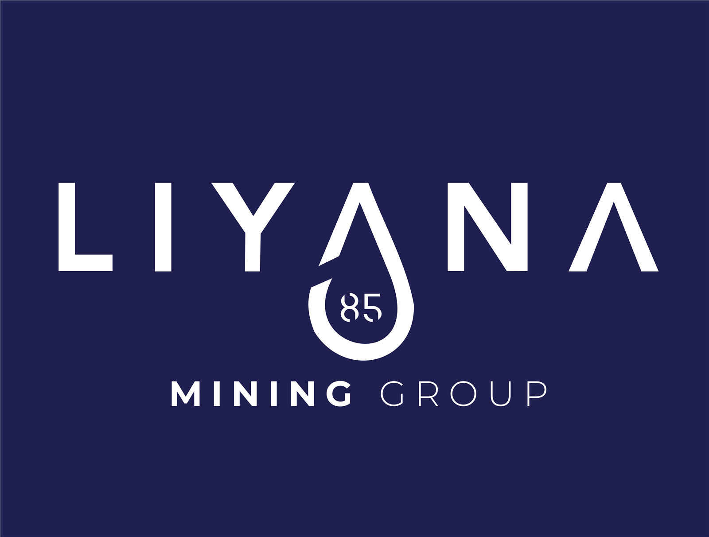

01
Application Development
Web and mobile software grounded in object-oriented design and sound engineering principles.
React Developer IT Systems Support Technology Founder
I’m Prince Booi, a Computer Science WIL candidate combining React development, Java and Kotlin foundations, backend-connected web platforms and practical IT support to help organisations operate and grow digitally.
Profile / 01
I combine software development with practical business IT support. My work covers responsive web platforms, Java-based object-oriented development, Kotlin mobile computing, API and CMS integrations, deployment and production maintenance.
That cross-functional view helps me translate business needs into usable interfaces, troubleshoot issues across accounts and workstations, support users clearly and document solutions for the next person.
Capabilities / 02
From interface to deployment desk, I work across the parts of technology businesses rely on.
01
Web and mobile software grounded in object-oriented design and sound engineering principles.
02
Content workflows, data foundations and reliable website delivery.
03
Clear first-line assistance that keeps users and business systems moving.
Selected Work / 03
Recent work across service presentation, content systems and production deployment.
Technology business
A modern business platform presenting web development, business email, hosting and practical IT support services.

Website modernisation
Modernised the business website and strengthened its professional digital presence.
Website modernisation
Revamped and maintained the company website to improve visibility and site functionality.
Also on GitHub Earlier development work and technical experiments.
Experience / 04
Current role
IT Systems Support & Web Developer
Education / 05
Tshwane University of Technology
Expected completion: 2026Relevant focus
Availability
Contact / 06
Let’s discuss what you’re building, maintaining or improving.
Email Prince